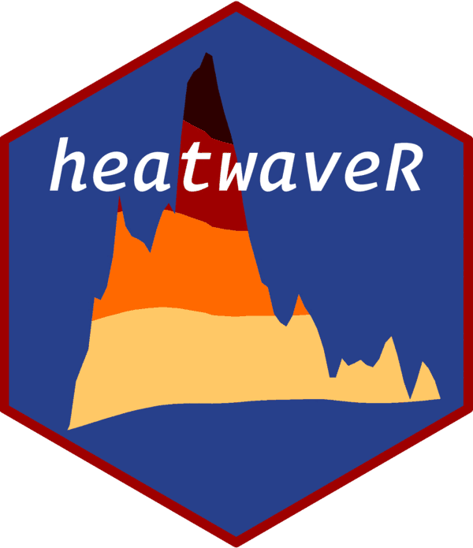

Detect proto-events based on a chosen criterion (column).
Source:R/proto_event.R
proto_event.RdAn internal function that detects the events according to the heatwave definition, and joins across the gaps if desired.
Arguments
- t_series
A dataframe of the correct dimensions inherited from
detect_eventwithin which this runs.- criterion_column
The column to use for the detection of events.
- minDuration
Minimum duration for acceptance of detected events.
- joinAcrossGaps
This logic gate tells this internal function if it should connect events across the
maxGap(see below). The default it inherits isTRUE.- maxGap
This is the number of rows (days) across which distinct events will be combined into one event if
joinAcrossGaps = TRUE.
Value
A dataframe that will be used within detect_event,
or which can be returned by detect_event if the switch
'protoEvent' is specified as TRUE.